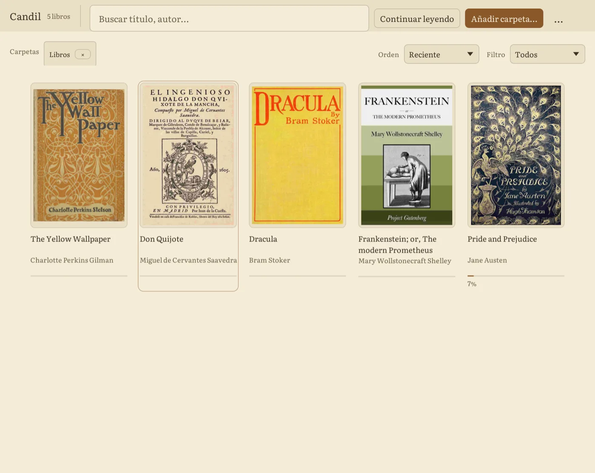

La biblioteca se queda en tu casa
Indexa carpetas locales, mira las portadas reales, ordena por serie o por autor y encuentra un título por metadatos. Candil guarda rutas, no copias: tus EPUB siguen siendo tuyos y siguen donde los dejaste.
